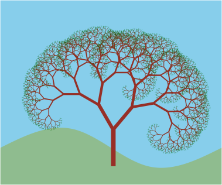
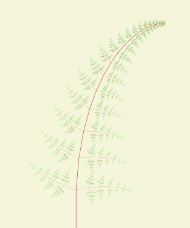
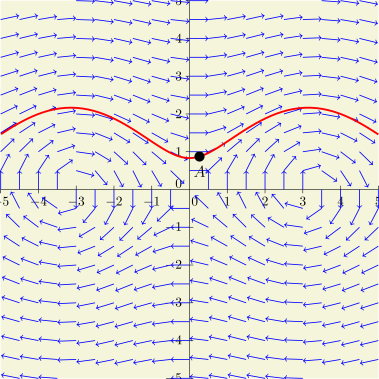
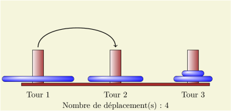
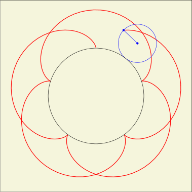
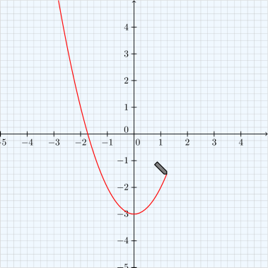
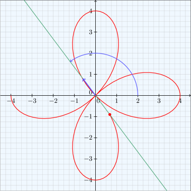
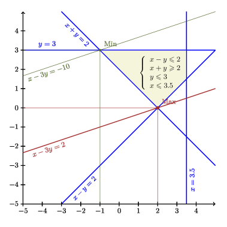

TeXgraph - Galerie 2D

Arbre fractal

Exemple de construction d'un objet fractal en utilisant la matrice de transformation et la commande ComposeMatrix(). Attention au temps de calcul : compter une dizaine de secondes. (fichier source)
Fougère

Deuxième exemple de construction d'un objet fractal en utilisant la matrice de transformation et la commande ComposeMatrix(). Attention au temps de calcul : compter une vingtaine de secondes. (fichier source)
Champ de vecteurs

Ce fichier permet de représenter un champ de vecteurs. Un bouton permet de saisir ou modifier le champ défini par $x\prime(t)+iy\prime(t)=f(x,y)$. Un clic gauche sur le graphique permet de tracer la courbe intégrale passant par le point cliqué. (fichier source)
Tours de Hanoi

Ce fichier permet de jouer à ce célèbre jeu par l'intermédiaire de boutons pour déplacer les disques. On peut également visualiser la solution. (fichier source)
Epicycloïdes / Hypocycloïdes

Ce fichier est une animation permettant de voir la courbe se dessiner au fur et à mesure que la "petite" roue tourne à l'intérieure ($r<0$) ou l'extérieure ($r>0$) de l'autre. Des boutons permettent de modifier les paramètres. (fichier source)
Courbes paramétrées

Ce fichier permet de visualiser la construction d'une courbe paramétrée point par point. C'est une animation qui montre l'évolution du point M(t) à l'aide d'un crayon. Un menu sous forme de boutons permet de changer de paramétrage, de stopper ou relancer l'animation. (fichier source)
Courbes en polaire

Ce fichier permet de visualiser la construction d'une courbe polaire point par point. C'est une animation qui montre l'évolution du point courant sur l'axe polaire en rotation. Un menu sous forme de boutons permet de changer de paramétrage, de stopper ou relancer l'animation. (fichier source)
Programmation linéaire (2D)

Ce fichier permet d'entrer par le biais d'un bouton, une liste de contraintes de la forme $ax+by>c$ ou $ax+by <c$,
et représente graphiquement les différentes droites et l'intersection des demi-plans. On peut placer la légende avec un clic gauche de la souris.
Il est également possible de définir une fonctionnelle du type $ax+by$ pour faire apparaître le max et le min en fonction des contraintes. (fichier source)